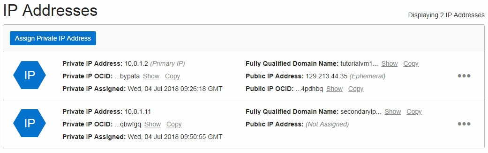
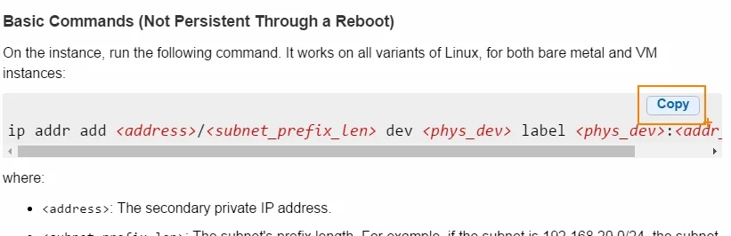
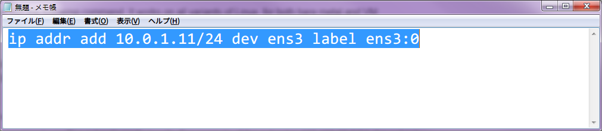
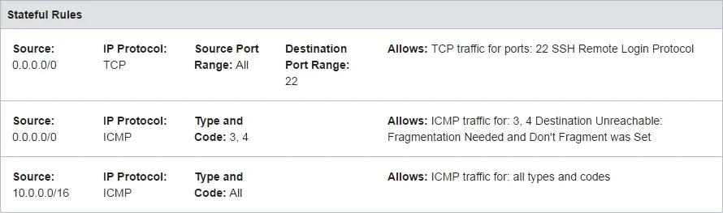
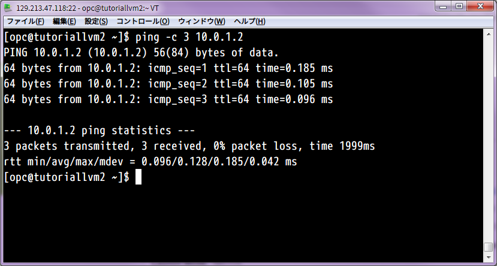
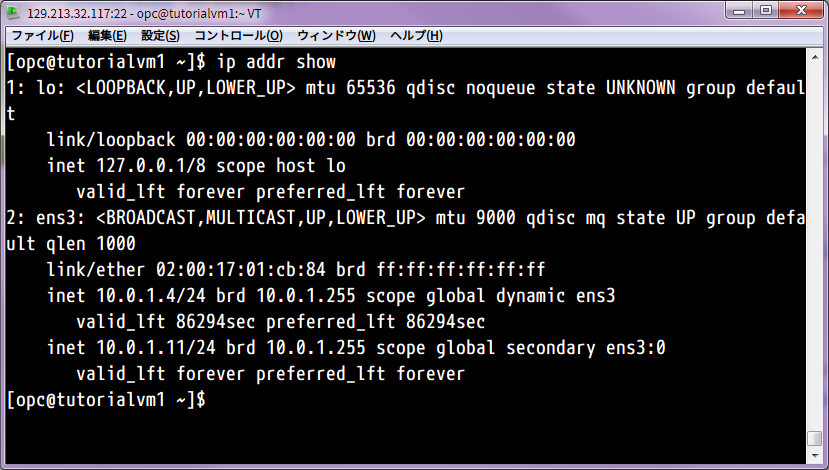

チュートリアル一覧に戻る : Oracle Cloud Infrastructure チュートリアル
Oracle Cloud Infrastrcuture では、インスタンスを作成すると、初期状態で所属するサブネットの中からプライベートIPアドレスが一つ(=プライマリ・プライベートIP)割り当てられています。(DHCPで自動割当したり、固定IPを割り振ることができます)
もし、インスタンスに複数のIPアドレスをアサインしたいような場合には、セカンダリのプライベートIPアドレスをインスタンスに割り当てて利用することができるようになります。この項ではその手順について学習します。
所要時間 : 約20分
前提条件 :
- その2 - クラウドに仮想ネットワーク(VCN)を作る を通じて仮想クラウド・ネットワーク(VCN)の作成が完了していること
- その3 - インスタンスを作成する を通じてインスタンスをひとつ作成していること
注意 : チュートリアル内の画面ショットについては Oracle Cloud Infrastructure の現在のコンソール画面と異なっている場合があります
目次：
- 1. はじめに - セカンダリ・プライベートIPアドレスに関する理解
- 2. セカンダリ・プライベートIPアドレスのアサイン
- 3. OS上でセカンダリIPアドレスを登録
- 4. 他インスタンスからセカンダリ・プライベートIPアドレスにアクセス
- 5. OSのIPアドレス登録の永続化
1. はじめに - セカンダリ・プライベートIPアドレスに関する理解
セカンダリ・プライベートIPアドレスは、インスタンスの仮想NICに対してプライマリのIPアドレスとは別のIPアドレスをアサインする機能です。この機能によって、複数のIPアドレスを単一のネットワーク・インタフェースに対して割り振る、いわいるIPエイリアス機能が使えるようになります。
ネットワーク・インタフェース(仮想NIC)は同一ですので、セカンダリ・プライベートIPアドレスに割り振ることができるのは、プライマリのプライベート・IPアドレスと同じサブネットに属するIPアドレスであることにご注意ください。
もし別のサブネット、あるいは別のVCNに所属するプライベートIPアドレスを振りたい場合には、セカンダリ・プライベートIPアドレスとは別の機能である 仮想NICの追加 によって実現できます。(この機能についてはまた別のチュートリアルを作成予定です)
インスタンスにセカンダリのプライベートIPアドレスが必要になるケースとしては、以下のようなものが考えられます。
セカンダリ・プライベートIPアドレスのユースケース 1. インスタンスのフェイルオーバー : インスタンスにセカンダリIPアドレスをアサインします。もしそのインスタンスに障害が起きた場合、セカンダリIPアドレスを同じサブネットに存在する別のインスタンスに再アサインすることによって、IPアドレスのフェイルオーバー (いわいるVIPのフェイルオーバーのようなイメージです) を実現することができます。もしそのプライベートIPアドレスにパブリックIPアドレス(NAT IP)がアサインされていた場合には、そのパブリックIPアドレスも一緒にスタンバイ・インスタンスに移動します。
2. インスタンス内でサービスやエンドポイントを複数実行する場合 : 例えばインスタンスの中に複数の仮想マシンやDockerコンテナを起動している場合、セカンダリ・プライベートIPアドレスを利用することでVCNのアドレス空間のIPアドレスをそれぞれの仮想マシン/コンテナに割り当てることができます。これにより仮想マシン/コンテナはVCNの他のインスタンスに対して直接接続できるようになります。またインスタンスの中に複数のウェブサイトをホストしている場合に、それぞれ別のIPアドレスを割り当てて処理を受け付けることができます。
セカンダリIPアドレスは以下のような特徴があります。
- セカンダリIPアドレスは、OS問わず、またベアメタル、仮想マシンすべてのシェイプで作成可能
- 1つの仮想NICあたり31個のセカンダリIPアドレスをアサイン可能(プライマリと併せて仮想NICあたり32IP)
- インスタンス作成後のみアサイン可能(正確には仮想NICが作成されてから)
- セカンダリIPアドレスのアサインを解除すると、サブネットのIPプールに返還されて再度別インスタンス等にアサインできるようになる
- インスタンスを終了(Terminate)するとアサインされていたセカンダリIPアドレスはアサイン解除される
- インスタンスへの帯域については、いくつセカンダリIPアドレスがアサインされていても不変、また特定IPアドレスに対する帯域の割当は不可
- セカンダリのプライベートIPアドレスには、予約パブリックIPを割り当てることが可能
- セカンダリIPアドレスは無償で利用可能
2. セカンダリ・プライベートIPアドレスのアサイン
【チュートリアル入門編 : その3 - インスタンスを作成する】で作成した仮想マシンインスタンスにセカンダリIPアドレスをアサインしていきます。
-
コンソールメニューから Compute → Instances を選択し、第3章その1で作成したインスタンスの名称のリンクを押します
-
左下の Resources メニューから Attached VNICs を選択します
-
インスタンス名称 (Primary VNIC) というリンクをクリックし、仮想NICの詳細画面にナビゲートします
-
このインスタンスにアタッチされているプライマリ仮想NIC (名前はインスタンス名と同じになります) の詳細情報が表示されます
 下部の IP Addresses フィールドにある Assign Private IP Address ボタンを押します
下部の IP Addresses フィールドにある Assign Private IP Address ボタンを押します - 立ち上がってきた Assign Private IP Address ウィンドウに以下の項目を入力し、Assign ボタンを押します
- PRIVATE IP ADDRESS - アサインするセカンダリ・プライベートIPアドレス(任意)、空欄の場合はDHCPからアサインされます。今回は10.0.1.11と入力しています。
- UNASSIGN IF ALREADY ASSIGNED TO ANOTHER VNIC - チェックしない
- HOSTAME - セカンダリIPアドレスにアサインするホスト名(任意)、今回は secondaryip と入力しています。
- PUBLIC IP TYPE - NO PUBLIC IPを選択

- IP Addresses フィールドに作成したセカンダリ・プライベートIPアドレスが追加されて表示されていることを確認します
 必要に応じて、さらにセカンダリ・プライベートIPアドレスを追加することもできます
3. OS上でセカンダリIPアドレスを登録
追加したセカンダリ・プライベートIPアドレスは、そのままではインスタンスの中のOSには認識されていないため、OS上でそのIPアドレスを登録する作業を行う必要があります。
ここでは、Oracle Linux や CentOS などの、Red Hat系のLinuxディストリビューションでの手順を説明しています。 もしUbuntu など他 Linux ディストリビューションや、Windows を利用している場合は、Oracle Cloud Infrastructure ドキュメントの Private IP Addresses の項Link の記述を参考に作業を実施してください。
-
任意のターミナルソフトを起動し、先程セカンダリ・プライベートIPを追加したインスタンスにアクセスします もし方法が不明な場合は、 その3 - インスタンスを作成するの 3. インスタンスへの接続 を参考にしてください
-
ターミナルで以下のコマンドを実行し、現在のIPアドレスの登録状況を確認します
ip addr show

先程登録したセカンダリのプライベートIPアドレス(上記例だと 10.0.1.11)がまだOSには登録されていないことがわかります。
後の作業で必要になるため、ここで以下の項目をメモしておきます。
- 仮想NICのインタフェース名 - 上記の例では ens3
- サブネットのサイズ - 上記の例では /24 (24-bit)
-
Oracle Cloud Infrastructure コンソールの IP Addresses フィールドの任意のIPアドレス欄の ・・・ メニューをマウスオーバーし、Edit を選択します

-
立ち上がってきた Edit ウィンドウの右上にある help リンクをクリックします

-
ブラウザの別ウィンドウ(タブ)に、Oracle Cloud Infrastructure のマニュアルの Private IP Address の項が立ち上がってきます。 下にスクロールダウンして、Linux: Details about Secondary IP Addresses という箇所を探します。
-
Basic Commands (Not Persistent Through a Reboot) という項目にあるコマンド欄の右上にある Copy ボタンをクリックします 
ボタンが Copied と変化したら、コマンドがクリップボードにコピーされています
-
任意のテキストエディタを開いて、コピーしたコマンドを貼り付けます

- 手元の環境に合わせて、コマンドの以下の項目を変更します。
- < address > - アサインしたセカンダリ・プライベートIPアドレス (上記例だと10.0.1.11)
- < subnet_prefix_len > - 先程メモしたサブネットのサイズ (上記例だと 24)
- < phys_dev > - セカンダリ・プライベートIPをアサインしたい仮想NIC (上記例だと ens3)
- < addr_seq_num > - 任意の番号、既にセカンダリIPをアサインしている場合はそれとの重複不可
 変更が完了したら、すべてを選択してコピーします。
-
さきほど開いたsshのターミナルに戻り、以下のコマンドを実行します
sudo -s
- 続けて、先程コピーしたコマンドを貼り付けて実行します
- 以下のコマンドを実行し、セカンダリのIPアドレスがアサインされていることを確認します
ip addr show

仮想NICに新しいセカンダリ・プライベートIPアドレス(上記例では10.0.1.11)がアサインされていることを確認します
4. 他インスタンスからセカンダリ・プライベートIPアドレスにアクセス
新しくもう一つ仮想マシンインスタンスを作成し、そのインスタンスから今アサインしたセカンダリ・プライベートIPアドレスで最初のインスタンスにアクセスできることを確認します。
-
先程作業したインスタンスと同じVCNの中に、もうひとつ仮想マシンインスタンスを作成します。 作業の方法が不明な場合は、 を参考に実施してください。 ここでは、インスタンスを TutorialVM2 という名前で作成しています。
-
VCNの2つのインスタンスの間で ping が通る設定になっているかを確認します。 Oracle Cloud Infrastructureコンソールから Network → Virtual Cloud Networks にナビゲートし、2つのインスタンスが所属するVCN名のリンクをクリックします。
-
左下の Resources メニューから Security Lists をクリックし、**Default Security List for
**という名前のセキュリティ・リストの名称のリンクをクリックします。 -
Ingress Rules に定義されているルールを確認し、VCNのインスタンスの間のpingが正しく疎通する設定になっていることを確認します。
例えば、以下の例であれば、VCNの中のインスタンス (10.0.0.0/16)からの ICMP通信をすべて許可設定になっているため、インスタンス間でpingが疎通することがわかります。(3行目の定義)

あるいは、以下の例であれば、VCNの中のインスタンス(10.0.0.0/16)からのすべての通信を許可する設定になっており、この場合もやはりインスタンス間でpingが疎通することがわかります。(3行目の定義)

もしインスタンス間でのpingが疎通しない設定担っている場合には、Edit All Rules ボタンを押し、上記例を参考にしながら適切にセキュリティ・リストの設定を行ってください。
セキュリティ・リストやその設定方法について不明な方は、その2 - クラウドに仮想ネットワーク(VCN)を作る をご参照ください
-
sshのターミナル・ウィンドウをもう一つ開き、新しく作成した TutorialVM2 インスタンスにsshでアクセスします
- セキュリティ・リストが正しく設定されていることを確認するために、まずは TurorialVM1 インスタンスのプライマリIPアドレス (上記例だと10.0.1.2)にpingを打って返答が帰ってくることを確認します
ping -c 3 10.0.1.2

もし応答がない場合は、前のステップのセキュリティ・リストの設定がうまくいっていない可能性があるので、もう一度見直してください。
- 次に、TutorialVM1 にアサインしたセカンダリ・プライベートIPアドレス (今回の例では 10.0.1.11)にpingを打ちます。
ping -c 3 10.0.1.11

上記のように応答が返ってきたら、セカンダリ・プライベートIPアドレスのアサインは無事に完了しています。
- セカンダリ・プライベートIPアドレスには、secondaryip というホスト名も登録していますので、ホスト名を使ったアクセスもできるはずです。 ホスト名宛にもpingを打って、到達することを確認します。
ping -c 3 secondaryip

5. OSのIPアドレス登録の永続化
ステップ3では、ipコマンドを使ってセカンダリIPアドレスをOSに登録しましたが、この方法だとインスタンス(正確にはネットワーク・インタフェース)が再起動すると変更が失われてしまいます。
そこで、ネットワーク・インタフェースの起動スクリプトにセカンダリIPの情報を記述して、インタフェース実行時に毎回セカンダリIPが登録されるようにします。
ここでは、Oracle Linux や CentOS などの、Red Hat系のLinuxディストリビューションでの手順を説明しています。 もしUbuntu など他 Linux ディストリビューションや、Windows を利用している場合は、Oracle Cloud Infrastructure ドキュメントの Private IP Addresses の項Link の記述を参考に作業を実施してください。
-
セカンダリ・プライベートIPアドレスを追加したインスタンスにssh接続します
- vimなどの任意のテキストエディタで、/etc/sysconfig/network-scripts/ifcfg-*
*:* * という名前のファイルを作成します。 および には、ステップ3で入力した値と同じものを使用します。 コマンド実行例 > > sudo vim /etc/sysconfig/network-scripts/ifcfg-ens3:0 - ファイルの中に以下を1行ずつ記述し、保存します。
- DEVICE=” < phys_dev>:< addr_seq_num>”
- BOOTPROTO=static
- IPADDR=<セカンダリIPアドレス>
- NETMASK=<サブネットの大きさをネットマスク形式で記述>
- ONBOOT=yes
記述例

- インタフェース再起動後にもセカンダリIPの登録が永続化されることを確認するために、OSをリブートします。
sudo reboot
-
1-2分程度でOSが再起動してくるので、再度sshで接続します
- ipコマンドで、セカンダリIPアドレスの登録が永続化されていることを確認します。
ip addr show

登録したセカンダリIPアドレスが表示されていたら、無事に登録の永続化が完了しています。
- 別のインスタンスからpingを打って、無事にセカンダリIPでアクセスできることを確認します。
ping -c 3 10.0.1.11

以上で、この項の作業は終了です。
チュートリアル一覧に戻る : Oracle Cloud Infrastructure チュートリアル